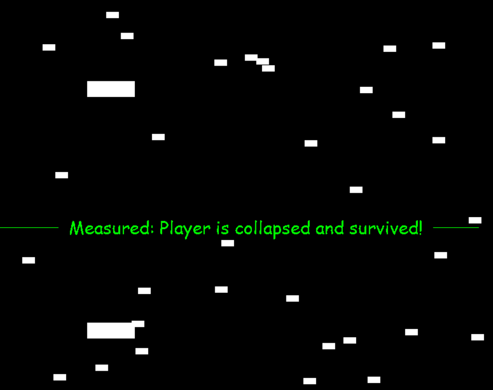
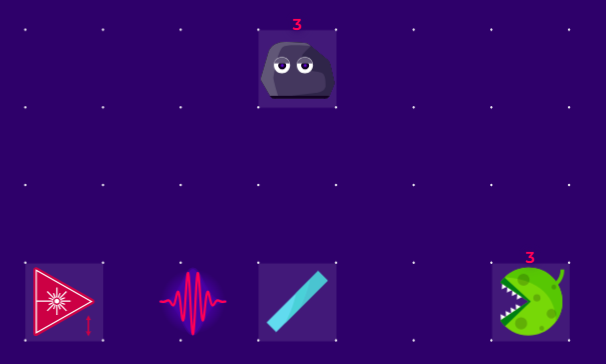
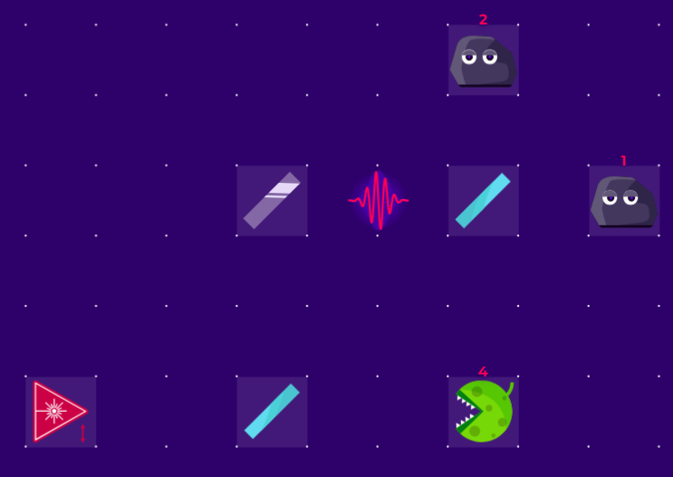
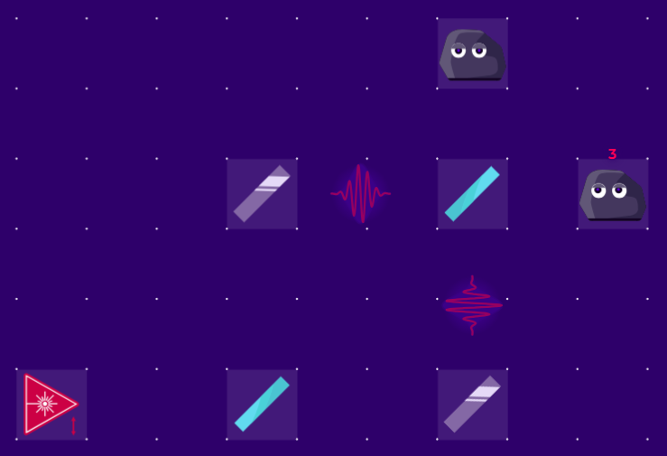
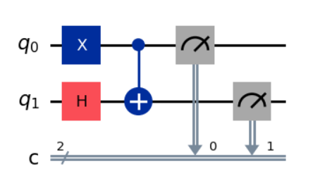
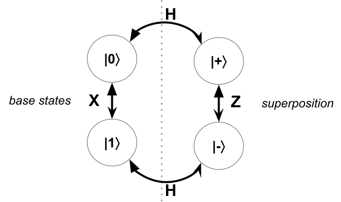

My Photonic Ship
We target high school and beyond students with basic programming skills in Python.
Desinged as an in-person workshop, the venue should have a beamer, a writing board, and internet access.
Each student should have access to a computer with internet connection. During the workshop, the participants use a browser and a Python editor, and run some code on Google Colab.
The workshop takes between 6 and 8 hours with breaks.
Workshop
We have six activities in total.
1. Three Photon Experiments
Here are our experiments:
|  |  |  |
| Experiment 1 | Experiment 2 | Experiment 3 |
We use a photon source, two beam-splitters, two mirrors, and three obstacles.
Now, we conduct them using the online simulator Quantum Flytrap.
2. Repeat Experiments with Qiskit
We repeat the same experiments by using quantum programming library Qiskit, which allows us to desing quantum programs as quantum circuits.
Classical logic gate examples from Wikipedia:
 |
|||
| NOT gate | AND gate | OR gate | XOR gate |
A quantum circuit example (by Qiskit):
Click for opening Google Colab Qiskit notebook >>
3. Mathematical Explanations
First we shortly review Waves & interference.
Then, here is the notebook for mathematical explanations of three experinments.
Here is the transitions between the states:

4. Philosophical Interpretations
5. Designing a Classical Game
6. Extending the Game with Quantum Superposition
Feel free to share your final version or GitHub repository link for publication on the event page by emailing "abuzer at lu dot lv"..
- You are welcome to continue refining your version after the workshop.
- We recommend including a description of your game to make it more accessible to potential players.
- If you prefer to publish it anonymously, please mention this in your email.
Resources & Events
- Advanced End-to-end QUAntum computing TEchnical Course , freely available in Spring 2025
- QBook101: Introductory self-studying Google Colab notebooks
- IBM Quantum Learning
- Keep an eye on the QWorld's social media posts
- Global Quantum Game Jam 2025 (Sep 5-7, 2025)